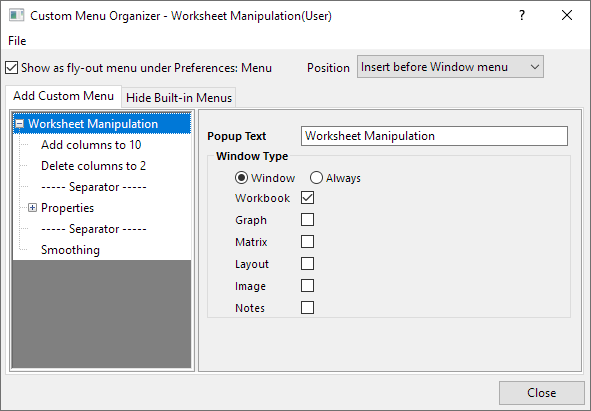
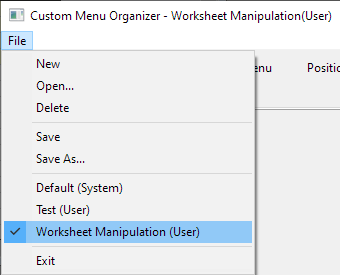
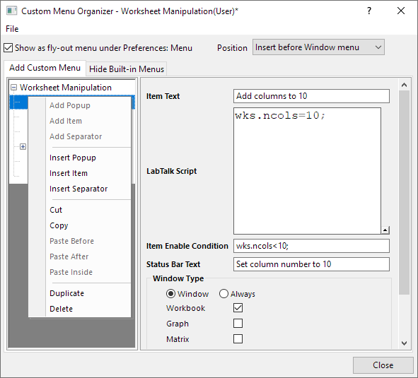
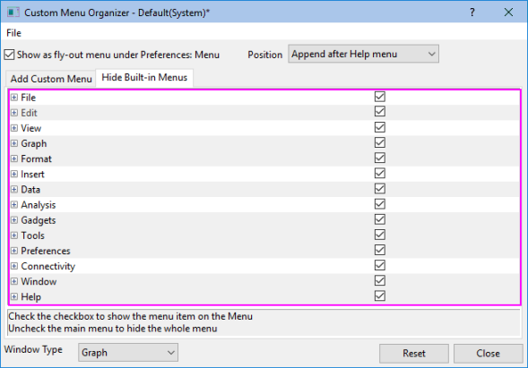
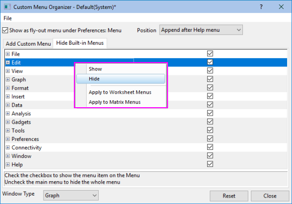
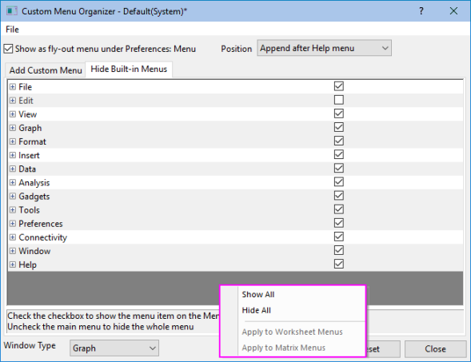

Der Dialog Benutzerdefinierte Menüs verwalten
CustomMenuOrganizer-Dialog
Mit dem Dialog Benutzerdefinierte Menüs verwalten können Sie neue Menüs erstellen oder Standardmenüs verbergen.

Das Menü Datei
Die Konfiguration der benutzerdefinierten Menüs kann als .omc-Datei gespeichert werden, die leicht mit anderen Anwendern gemeinsam genutzt werden kann. Das Menü Datei im Dialog Benutzerdefinierte Menüs verwalten bietet eine Gruppe von Optionen für die Arbeit mit .omc-Dateien.
- 
| Neu |
Erstellt eine neue .omc-Datei. |
| Öffnen... |
Öffnet eine vorhandene .omc-Datei. |
| Löschen |
Löscht die aktuelle .omc-Datei endgültig. |
| Speichern |
Speichert die aktuelle Datei mit dem aktuellen Dateinamen. |
| Speichern unter... |
Speichert die aktuelle Datei mit einem neuen Dateinamen. |
| Die Liste der verfügbaren .omc-Dateien |
Der markierte Teil in dem Screenshot oben zeigt alle .omc-Dateien, die in Origins Systemordner, Anwenderdateiordner und Gruppenordner gefunden wurden. Sie können eine von ihnen auswählen, um sie zu bearbeiten. |
| Beenden |
Beendet den Dialog Benutzerdefinierte Menüs verwalten. |
Weitere Bedienelemente auf diesem Dialog
| Als Ausklappmenü unter Einstellungen: Menü zeigen |
Legen Sie fest, ob der Name der aktuellen .omc-Datei als Ausklappmenü im Menü Einstellungen gezeigt werden soll. |
| Position |
Legt die Position des benutzerdefinierten Menüs fest.
Optionsliste:
- Nach Menü Hilfe anhängen
- Das benutzerdefinierte Menü wird am Ende des Menüs Hilfe hinzugefügt.
- Vor Menü Fenster einfügen
- Das benutzerdefinierte Menü wird vor dem Menü Fenster eingefügt.
|
| Schließen |
Klicken Sie auf diese Schaltfläche, um den Dialog Benutzerdefinierte Menüs verwalten zu schließen. |
Die Registerkarte Benutzerdefiniertes Menü hinzufügen
Der linke Teil dieser Registerkarte führt die benutzerdefinierten Menüs in einer Baumstruktur auf. Sie können bis zu 3 Popup-Hauptmenüs mit Hilfe des Kontextmenübefehls Neues Haupt-Popup erstellen (klicken Sie mit der rechten Maustaste auf den linken Bereich, um das Kontextmenü zu öffnen) oder das vorhandene Popup-Hauptmenü duplizieren. Jedes Popup-Hauptmenü kann mehrere Popup-Menüs, Menüelemente und Trennzeichen enthalten.
- Popup-Menü: Enthält Menüs mit mehreren Ebenen. Die max. Anzahl der Menüebenen beträgt 5.
- Menüelement: Enthält Skripte, die ausgeführt werden, wenn das Menüelement ausgewählt wird.
- Trennzeichen: Trennt eine Gruppe von Menüoptionen, die eine ähnliche Funktion haben.
Der rechte Teil dieser Registerkarte enthält verschiedene Bedienelemente zum Festlegen von Eigenschaften der Popupmenüs oder Menüelemente. Beachten Sie, dass die Bedienelemente im rechten Bereich unterschiedlich sind, wenn der Typ der Menüoption geändert wurde.
- 
Bedienelemente des Dialogs und Kontextmenü bei Auswahl eines Popup-Hauptmenüs
Bedienelemente des Dialogs
| Popup-Text |
Legt die Beschriftung des Popup-Hauptmenüs fest. |
| Fenstertyp |
Legt die Instanzen bei verfügbarem Popup-Hauptmenü fest.
- Ist das Kontrollkästchen rechts neben einem Fenstertyp nicht aktiviert, dann ist das Popup-Menü und seine Untermenüs nicht verfügbar. Dabei muss das aktive Fenster zu diesem Fenstertyp gehört. Einschließlich: Arbeitsmappe, Grafik, Matrix, Layout, Bild und Notizen
- Hinweis: Standardmäßig schließt der Fenstertyp Excel nicht mit ein. Setzen Sie die Systemvariable @ECEM auf 1. Dann wird die Option Excel gezeigt.
- Ist diese Option aktiviert, ist das Popup-Menü immer verfügbar, unabhängig von dem aktiven Fenstertyp.
|
Kontextmenü
| Popup hinzufügen |
Fügt ein Popup-Untermenü am Ende der Menüoptionenliste des aktuellen Popup-Hauptmenüs hinzu. |
| Element hinzufügen |
Fügt ein Menüelement am Ende der Menüoptionenliste des aktuellen Popup-Hauptmenüs hinzu. |
| Trennzeichen hinzufügen |
Fügt ein Trennzeichen am Ende der Menüoptionenliste des aktuellen Popup-Hauptmenüs hinzu. |
| Popup einfügen |
Diese Option ist nur verfügbar, wenn die Anzahl der Popup-Hauptmenüs geringer ist als 3. Vor dem aktuellen Popup-Hauptmenü wird ein weiteres Popup-Hauptmenü eingefügt. |
| Ausschneiden |
Schneidet das ausgewählte Popup-Hauptmenü aus. |
| Kopieren |
Kopiert das ausgewählte Popup-Hauptmenü. |
| Davor einfügen |
Diese Option ist nur verfügbar, wenn ein Popup-Menü ausgeschnitten oder kopiert wurde. Fügt das Popup-Menü vor dem aktuellen Popup-Hauptmenü ein. |
| Danach einfügen |
Diese Option ist nur verfügbar, wenn ein Popup-Menü ausgeschnitten oder kopiert wurde. Fügt das Popup-Menü nach dem aktuellen Popup-Hauptmenü ein. |
| Innen einfügen |
Diese Option ist nur verfügbar, wenn eine Menüoption ausgeschnitten oder kopiert wurde. Fügt das Popup-Menü innerhalb des aktuellen Popup-Hauptmenüs ein. |
| Diagramme |
Diese Option ist nur verfügbar, wenn die Anzahl der Popup-Hauptmenüs geringer ist als 3. Dupliziert das ausgewählte Popup-Hauptmenü. |
| Löschen |
Löscht das ausgewählte Popup-Hauptmenü. |
Bedienelemente des Dialogs und Kontextmenü bei Auswahl eines Popup-Untermenüs
Bedienelemente des Dialogs
| Popup-Text |
Legt die Beschriftung des Popup-Untermenüs fest. |
| Fenstertyp |
Legt die Instanzen beim verfügbaren Popup-Untermenü fest.
- Ist das Kontrollkästchen rechts neben einem Fenstertyp nicht aktiviert, dann ist das Popup-Untermenü nicht verfügbar, wenn das aktive Fenster zu diesem Fenstertyp gehört. Einschließlich: Arbeitsmappe, Grafik, Matrix, Layout, Bild und Notizen
- Hinweis: Standardmäßig schließt der Fenstertyp Excel nicht mit ein. Setzen Sie die Systemvariable @ECEM auf 1. Dann wird die Option Excel gezeigt.
- Ist diese Option aktiviert, ist das Popup-Untermenü immer verfügbar, unabhängig von dem aktiven Fenstertyp.
|
| Tag zusammenfügen |
Legt den Tag Zusammenfügen fest. Wenn zwei oder mehr Popup-Untermenüs den gleichen Tag haben, werden sie bei Aktivierung der Menüs zu einem zusammengefügt. |
Kontextmenü
| Popup hinzufügen |
Fügt ein Popup-Untermenü am Ende der Menüoptionenliste des ausgewählten Popup-Menüs hinzu. |
| Element hinzufügen |
Fügt ein Menüelement am Ende der Menüoptionenliste des ausgewählten Popup-Menüs hinzu. |
| Trennzeichen hinzufügen |
Fügt ein Trennzeichen am Ende der Menüoptionenliste des ausgewählten Popup-Menüs hinzu. |
| Popup einfügen |
Fügt ein Popup-Menü vor dem ausgewählten Popup-Menü ein. |
| Element einfügen |
Fügt ein Menüelement vor dem ausgewählten Popup-Menü ein. |
| Trennzeichen einfügen |
Fügt ein Trennzeichen vor dem ausgewählten Popup-Menü ein. |
| Ausschneiden |
Schneidet das ausgewählte Popup-Menü aus. |
| Kopieren |
Kopiert das ausgewählte Popup-Menü. |
| Davor einfügen |
Diese Option ist nur verfügbar, wenn eine Menüoption ausgeschnitten oder kopiert wurde. Fügt die Menüoption vor dem ausgewählten Popup-Menü ein. |
| Danach einfügen |
Diese Option ist nur verfügbar, wenn eine Menüoption ausgeschnitten oder kopiert wurde. Fügt die Menüoption vor dem ausgewählten Popup-Menü ein. |
| Innen einfügen |
Diese Option ist nur verfügbar, wenn eine Menüoption ausgeschnitten oder kopiert wurde. Fügt die Menüoption innerhalb des ausgewählten Popup-Menü ein. |
| Diagramme |
Dupliziert das ausgewählte Popup-Menü. |
| Löschen |
Löscht das ausgewählte Popup-Menü. |
Bedienelemente des Dialogs und Kontextmenü bei Auswahl eines Menüelements
Bedienelemente des Dialogs
| Elementtext |
Legt die Beschriftung der Menüelemente fest. |
| LabTalk-Skript |
Mit dieser Option wird das LabTalk-Skript eingegeben, das mit dem Menüelement in diesem Bearbeitungsfeld verbunden werden soll. Bei Klicken auf das Menüelement wird das Skript ausgeführt. |
| Bedingung der Elementaktivierung |
Legt die Bedingung fest, wann das Menüelement aktiviert sein soll. Geben Sie z.B. wks.ncols>2 in diesem Bearbeitungsfeld ein. Das Menüelement wird dann nur aktiviert, wenn das aktive Arbeitsblatt über mehr als zwei Spalten verfügt. Lassen Sie dieses Bearbeitungsfeld leer, wenn das Menüelement immer aktiviert sein soll. |
| Statusbalkentext |
Legt den Text fest, der in der Statusleiste gezeigt wird, wenn man mit der Maus darüber geht. |
| Fenstertyp |
Legt die Instanzen beim verfügbaren Popup-Untermenü fest.
- Ist das Kontrollkästchen rechts neben einem Fenstertyp nicht aktiviert, dann ist das Menüelement nicht verfügbar. Dabei muss das aktive Fenster zu diesem Fenstertyp gehören. Einschließlich: Arbeitsmappe, Grafik, Matrix, Layout, Bild und Notizen
- Hinweis: Standardmäßig schließt der Fenstertyp Excel nicht mit ein. Setzen Sie die Systemvariable @ECEM auf 1. Dann wird die Option Excel gezeigt.
- Ist diese Option aktiviert, ist das Menüelement immer verfügbar, unabhängig von dem aktiven Fenstertyp.
|
Kontextmenü
| Popup einfügen |
Fügt ein Popupmenü vor dem ausgewählten Menüelement ein. |
| Element einfügen |
Fügt ein Menüelement vor dem ausgewählten Menüelement ein. |
| Trennzeichen einfügen |
Fügt ein Trennzeichen vor dem ausgewählten Menüelement ein. |
| Ausschneiden |
Schneidet das ausgewählte Menüelement aus. |
| Kopieren |
Kopiert das ausgewählte Menüelement. |
| Davor einfügen |
Diese Option ist nur verfügbar, wenn eine Menüoption ausgeschnitten oder kopiert wurde. Fügt die Menüoption vor dem ausgewählten Menüelement ein. |
| Danach einfügen |
Diese Option ist nur verfügbar, wenn eine Menüoption ausgeschnitten oder kopiert wurde. Fügt die Menüoption vor dem ausgewählten Menüelement ein. |
| Diagramme |
Dupliziert das ausgewählte Menüelement. |
| Löschen |
Löscht das ausgewählte Menüelement. |
Das Kontextmenü bei ausgewähltem Trennzeichen
| Popup einfügen |
Fügt ein Popupmenü vor dem ausgewählten Trennzeichen ein. |
| Element einfügen |
Fügt ein Menüelement vor dem ausgewählten Trennzeichen ein. |
| Trennzeichen einfügen |
Fügt ein Trennzeichen vor dem ausgewählten Trennzeichen ein. |
| Ausschneiden |
Schneidet das ausgewählte Trennzeichen aus. |
| Kopieren |
Kopiert das ausgewählte Trennzeichen. |
| Davor einfügen |
Diese Option ist nur verfügbar, wenn eine Menüoption ausgeschnitten oder kopiert wurde. Fügt die Menüoption vor dem ausgewählten Trennzeichen ein. |
| Danach einfügen |
Diese Option ist nur verfügbar, wenn eine Menüoption ausgeschnitten oder kopiert wurde. Fügt die Menüoption nach dem ausgewählten Trennzeichen ein. |
| Diagramme |
Dupliziert das ausgewählte Trennzeichen. |
| Löschen |
Löscht das ausgewählte Trennzeichen. |
Die Registerkarte Standardmenüs verbergen
Diese Registerkarte listet alle Standardmenüs in Baumstruktur auf. Mit Hilfe der Kontrollkästchen rechts von jedem Popup-Menü oder Menüelements können Sie festlegen, ob es angezeigt werden soll.
- 
Bedienelemente des Dialogs und Kontextmenü auf dieser Registerkarte
Bedienelemente des Dialogs
| Fenstertyp |
Verschiedene Menüs entsprechen unterschiedlichen Fenstertypen in Origin. Ein Fenstertyp wird in der Auswahlliste Fenstertyp ausgewählt, die Menüs im Dialog werden automatisch aktualisiert.
Einschließlich: Arbeitsmappe, Grafik, Matrix, Layout, Bild und Notizen
|
| Zurücksetzen |
Aktiviert alle Kontrollkästchen. |
Kontextmenü
Das Kontextmenü bei einem markierten Menü
- 
| Zeigen |
Die markierte Menüoption wird gezeigt. Das entsprechende Kontrollkästchen wird entsprechend aktiviert. |
| Verbergen |
Die markierte Menüoption wird ausgeblendet. Das entsprechende Kontrollkästchen wird entsprechend deaktiviert. |
| Auf Arbeitsblattmenüs anwenden |
Diese Option ist nur verfügbar, wenn Diagramm oder Matrix in der Auswahlliste Fenstertyp ausgewählt ist. Die aktuelle Einstellung (Zeigen/Verbergen) der markierten Menüoption wird auf das gleiche Menü angewendet, wenn ein Arbeitsblatt aktiv ist. |
| Auf Grafikmenüs anwenden |
Diese Option ist nur verfügbar, wenn Arbeitsmappe oder Matrix in der Auswahlliste Fenstertyp ausgewählt ist. Die aktuelle Einstellung (Zeigen/Verbergen) der markierten Menüoption wird auf das gleiche Menü angewendet, wenn ein Diagramm aktiv ist. |
| Auf Matrixmenüs anwenden |
Diese Option ist nur verfügbar, wenn Diagramm oder Arbeitsmappe in der Auswahlliste Fenstertyp ausgewählt ist. Die aktuelle Einstellung (Zeigen/Verbergen) der markierten Menüoption wird auf das gleiche Menü angewendet, wenn eine Matrix aktiv ist. |
Das Kontextmenü, das gezeigt wird, wenn Sie mit der rechten Maustaste auf den grauen Bereich dieser Registerkarte klicken
- 
| Alle zeigen |
Zeigt alle Menüoptionen, die aktuell auf der Registerkarte aufgelistet sind. |
| Alle verbergen |
Verbirgt alle Menüoptionen, die aktuell auf der Registerkarte aufgelistet sind. |